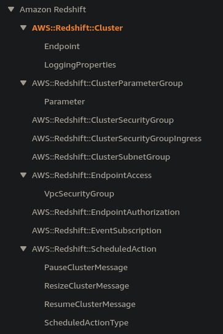

How to Learn Any AWS Service in a Day
It doesn't really matter exactly how many AWS services exist - the sheer number of them is overwhelming, and (it feels like) they add more everyday. No one person can know how to use all of them.
The trick to being successful long-term in the cloud, getting new gigs, and overcoming challenges is not learning every service. In fact, the title of this article is a lie. You can't learn a service in a day, or at least not in the way you'd learn it if you implemented something in it or worked with it for a year. But very often you'll need an understanding better than "I know what AWS says this service does" but nowhere near as deep as "I know where the demons are in this service."
You need a structured learning process for learning new services to this level quickly. My approach start making connections in your head between the objects in a service and the actions you can take with them. In short, I am simply recommending that you build a mental graph of the parts of a service and their relationships. This article will show you how to do that and where to get the information to do so. The title is just for clickbait :)
What no one tells you about AWS
AWS isn't a bunch of products that make it easier/faster to get things done. AWS is really just a bunch of HTTP APIs. These define exactly what you can and can't do in AWS. When the next Andy Jassy says "We launched service X!" he means "We launched a new HTTP API!"
What no one tells you about the docs
No one tells you that organizations, massive ones, that use AWS are somewhere on a crawl, walk, run continuum, and the fact is that their level of maturity changes from service to service and department to department. Maybe some levels of business are completely, natively built on AWS, but maybe some data analytics teams still use on-premise data warehousing backed by batch ETL and basic ad-hoc querying with no awareness of Amazon Redshift or any of AWS's other analytics offerings. But think of how AWS convinces that one lagging line-of-business to come off that on-premise workload. The two sections of the business are so different, and the two sets of people involved so different that AWS can't rely on its overall reputation to sell services. They need a quick way to convince an org's most businessy technical staff to greenlight using each service individually. AWS doesn't try to sell products to customers based on boring things such as "You can do the same thing you're doing now, but maybe for cheaper!", since going to the cloud might be cheaper, but it might not. AWS instead targets organizations' drives to grow by promoting exciting long-range prospects for each service such as "Predictive modeling of data sourced from streams, data lakes, and more."
Take this basic sales drive and combine it with the fact that the people writing AWS's documentation are very familiar with Redshift and all the cool things it can do, and the documentation ends up looking very top-down as a result. What this means is that the documentation barely tells you what the service can really do. In other words, yeah Sagemaker can infer deeply meaningful conclusions from terrabyte datasets, but what the heck are the pieces involved in that?
On the first page of a service's docs, usually called "Getting Started," the focus is on getting customers to do something that shows results really, really quickly rather than teaching the service. (Side note: the "What is Some Service?" or "How some service works" first-pagers are usually way better and closer to what I describe here, so read those if your service has one.) AWS wants you to see the service as a nice, packaged solution rather than a bunch of building blocks that can be hooked together in different ways (and maybe not the specific way you want!). But as any experienced AWS developer can tell you, the real work of implementation requires thinking about services almost entirely in the latter way. Interesting problems aren't covered in the Getting Started guides. They also operate at an abstracted level, sort of in the way that getting a guided tour of a building is probably fine if you're visiting on vacation, but if you're there to inspect the building for safety and soundness of design, you probably want to poke around on your own first without the layer of varnish and bias that comes with a guided tour.
Note: I think the AWS IoT Greengrass v2 "How AWS IoT Greengrass works" guide is a pretty good example of how some of the first docs AWS shows to you can be good. I like this one particularly because of its "Key concepts for AWS IoT Greengrass" section that breaks down the big pieces of the Greengrass service and avoids all the abstraction that Getting Started guides necessarily introduce first.
The rest of the AWS docs sections are usually a mixture of disjointed guides of varying depth on a smattering of topics within the service. They are packed with useful information, but if you're trying to learn really quickly, they can get you mired in the depth of one topic without giving you a survey of what the service as a whole does. Sometimes they're organized as one section per feature of the service. They're often heavily console focused, which can be a fine if time-consuming and slightly misleading way of learning a service. The biggest problem with AWS's service docs is not that they won't teach you things - they will - it's that they vary so much in structure between services that your strategy for digesting one service's docs doesn't really transfer to the next. Remember - we're trying to come up with a strategy that we can use across all the services since there are a couple hundred services to learn, so we can't waste our first moments with a service poking around in possibly fruitless areas. We need the pure, unadulterated good stuff.
Breaking the docs down
The HTTP API reference documentation is the absolute best source for learning about a service, however. I cannot stress this enough: every tool that uses this service uses this API. The only exceptions might be some behind-the-scenes APIs that the public (i.e. everyone but AWS employees) doesn't know about, but even AWS services use these API endpoints to interact with services that they depend on. Boto3, AWS CDK, any of the language SDKs, even CloudFormation and CloudFormation, use these APIs either directly or indirectly. They define absolutely and for each service the service's things and the stuff you can do to those things.
The "Getting Started" documentation sections are almost story-like - they are step-by-step guides with a beginning, middle, and an end, and they're not even choose-your-own-adventure - they lead us to one end state.
But once we learn how to quickly see the parts of a service and their possible connections, we can start to address interesting problems such as "What broad mitigations should my organization put in place for threats relating to Amazon Redshift?," a question that could never be answered from the top-down documentation unless a specific docs page covered it (which is possible!). Sure, months or years of experience building and operating Redshift clusters could help you answer this question quickly, but not everyone answering tough questions about an AWS service for their organization has the luxury (curse?) of having used that service for a long time already.
The process
Build a mental graph with the service's objects as nodes and its actions as connections between those nodes. Finally, fill in any gaps in your understanding or search for the answers to specific questions using the prose documentation (maybe even Getting Started!).
- Focus on the API layer first. Start learning from the most fundamental parts of the service, meaning take a bottom-up approach, not a top down one. Every service has an API Reference section like this one for Service Catalog. If you can't find it, just google "aws [Service Name] api reference."
- Create nodes in your mental graph as you read through the "Actions" section. Nearly every service has
Create<SomeObjectName>actions. Read these first to get an idea of what "things" the service involves and what kinds of attributes each of these things has. The request and response bodies will list these.Note: The CloudFormation Resource and Property Types docs serve a different purpose than the service's API docs, but usually they provide a quicker overview of the types of objects in a service, since part of the CloudFormation team's job is to translate each service's objects into CloudFormation resource types, so a lot of the work of identifying things in a service is already done for you. The downsides, and the reasons I don't recommend this immediately, are that CloudFormation doesn't support every service and sometimes the strange mapping between services' APIs and CloudFormation can be more confusing than helpful. But check out this very helpful list of the CloudFormation resource types for RedShift. These list the types of objects in RedShift, and you don't even have to dig through the API docs!: .
- After you have a solid idea of what things you can do stuff with in the service, fill in the connections between the service's nodes with the relationships between them as described by the actions' documentation. For instance, if the request body for
CreateDomainhas a parameter calledSubnetIdsand it'sRequired: Yes, aDomainsomehow has an EC2Subnet. This is an inter-service connection, but the principle still holds.Note: Stop and read the paragraphs at the beginning of each action's docs. These are some of the most information-packed and direct docs sections in all of AWS.
- Begin asking "How would I do x?" Try to make a fairly rich scenario. You want it to describe an action you could actually take first thing if you started using the service.
An example using Redshift
You can learn things just by reading the action list from the documentation. Take the list of actions for Redshift, for instance:
- AcceptReservedNodeExchange
- AddPartner
- AssociateDataShareConsumer
- AuthorizeClusterSecurityGroupIngress
- AuthorizeDataShare
- AuthorizeEndpointAccess
- AuthorizeSnapshotAccess
- BatchDeleteClusterSnapshots
- BatchModifyClusterSnapshots
- CancelResize
- CopyClusterSnapshot
- CreateAuthenticationProfile
- CreateCluster
- CreateClusterParameterGroup
- CreateClusterSecurityGroup
- CreateClusterSnapshot
- CreateClusterSubnetGroup
- CreateEndpointAccess
- CreateEventSubscription
- CreateHsmClientCertificate
- CreateHsmConfiguration
- CreateScheduledAction
- CreateSnapshotCopyGrant
- CreateSnapshotSchedule
- CreateTags
- CreateUsageLimit
- DeauthorizeDataShare
- DeleteAuthenticationProfile
- DeleteCluster
- DeleteClusterParameterGroup
- DeleteClusterSecurityGroup
- DeleteClusterSnapshot
- DeleteClusterSubnetGroup
- DeleteEndpointAccess
- DeleteEventSubscription
- DeleteHsmClientCertificate
- DeleteHsmConfiguration
- DeletePartner
- DeleteScheduledAction
- DeleteSnapshotCopyGrant
- DeleteSnapshotSchedule
- DeleteTags
- DeleteUsageLimit
- DescribeAccountAttributes
- DescribeAuthenticationProfiles
- DescribeClusterDbRevisions
- DescribeClusterParameterGroups
- DescribeClusterParameters
- DescribeClusters
- DescribeClusterSecurityGroups
- DescribeClusterSnapshots
- DescribeClusterSubnetGroups
- DescribeClusterTracks
- DescribeClusterVersions
- DescribeDataShares
- DescribeDataSharesForConsumer
- DescribeDataSharesForProducer
- DescribeDefaultClusterParameters
- DescribeEndpointAccess
- DescribeEndpointAuthorization
- DescribeEventCategories
- DescribeEvents
- DescribeEventSubscriptions
- DescribeHsmClientCertificates
- DescribeHsmConfigurations
- DescribeLoggingStatus
- DescribeNodeConfigurationOptions
- DescribeOrderableClusterOptions
- DescribePartners
- DescribeReservedNodeExchangeStatus
- DescribeReservedNodeOfferings
- DescribeReservedNodes
- DescribeResize
- DescribeScheduledActions
- DescribeSnapshotCopyGrants
- DescribeSnapshotSchedules
- DescribeStorage
- DescribeTableRestoreStatus
- DescribeTags
- DescribeUsageLimits
- DisableLogging
- DisableSnapshotCopy
- DisassociateDataShareConsumer
- EnableLogging
- EnableSnapshotCopy
- GetClusterCredentials
- GetReservedNodeExchangeConfigurationOptions
- GetReservedNodeExchangeOfferings
- ModifyAquaConfiguration
- ModifyAuthenticationProfile
- ModifyCluster
- ModifyClusterDbRevision
- ModifyClusterIamRoles
- ModifyClusterMaintenance
- ModifyClusterParameterGroup
- ModifyClusterSnapshot
- ModifyClusterSnapshotSchedule
- ModifyClusterSubnetGroup
- ModifyEndpointAccess
- ModifyEventSubscription
- ModifyScheduledAction
- ModifySnapshotCopyRetentionPeriod
- ModifySnapshotSchedule
- ModifyUsageLimit
- PauseCluster
- PurchaseReservedNodeOffering
- RebootCluster
- RejectDataShare
- ResetClusterParameterGroup
- ResizeCluster
- RestoreFromClusterSnapshot
- RestoreTableFromClusterSnapshot
- ResumeCluster
- RevokeClusterSecurityGroupIngress
- RevokeEndpointAccess
- RevokeSnapshotAccess
- RotateEncryptionKey
- UpdatePartnerStatus
From this list, I can quickly see that, even though the documentation says Redshift is made of Clusters and Nodes, you don't directly manage Nodes in Redshift. Applying a bit of what I know from experience in looking at AWS API documentation, I immediately realize there are no "CreateNode," "UpdateNode," or "DeleteNode" actions. I can surmise that Clusters will manage Nodes for me. Looking at the documentation for the CreateCluster endpoint and the DescribeNodeConfiguration endpoint, I see that this is indeed true and I will merely put parameters on the Cluster, and then it will manage the Nodes for me to ensure the state matches the parameters I've stated. I also see that there is no manual way to provision storage capacity via the API, though I can check on usage with "DescribeStorage." I also note that clusters can apparently be paused, rebooting, snapshotted, resized, shared through something about partnership, configured with logging, and more. I see from the CreateCluster documentation that Redshift clusters are placed in some VPC of my choosing, that I could make the very bad mistake of making my cluster publicly accessible with (apparently) one option, and more!
Next, I begin poking around in the documentation for the "Create
Be sure to note important identifiers re-used throughout the API operations for each object type. For instance, in Redshift, the one that immediately jumps out at me is the Cluster Identifier: "A unique identifier for the cluster. You use this identifier to refer to the cluster for any subsequent cluster operations such as deleting or modifying. The identifier also appears in the Amazon Redshift console." This is right at the top of the CreateCluster documentation, and it will probably end up being the name that we will need most often when we are referring to specific Redshift resources -- the documentation even points this out when it talks about later operations.
Knowing which identifiers exist, are required by API calls that reference existing resources, and which are easily accessible for different Objects is crucial. One of my favorite examples is EC2 Instances. EC2 is often a person's first exposure to AWS, since it's the "launch a computer in the cloud" service. They use the AWS EC2 Console Wizard and get prompted for an Instance Name. But in reality, at the API level, the Name is just a tag that is applied via the EC2 API action CreateTags, so it's not a terribly useful identifier for vanilla EC2 usage.
Once you have a graph sketched out, try asking questions that fill in the gaps. For instance, "How does storage capacity work with Redshift? From EC2, I am used to compute capacity being managed by instance type and storage capacity being done in EBS or (less frequently) instance volumes." The answer is not immediately obvious via the API, so it causes me to search for the answer, which doesn't seem to be explicitly stated in the Redshift documentation. Ultimately, I find by searching "Redshift storage types" that node types in clusters determine the storage capacity.
Before actually using the service, we can ask scenario-based questions, such as "How can I query my database?" There are no obvious client or connection operations available (the Endpoint operations relate to VPC endpoints per the API docs). By searching "How do I query a Redshift database?" I get the following, straightforward page "Querying a database".
Summary
We can't learn everything from the API actions, but we can get a scaffold from which to ask better questions and start filling in the gaps with experience and prose documentation. I think this method is useful for getting up to medium speed with a service in just a couple of hours. It gives a loosely structured impression of what a service does that can then be filled in by experimentation and other reading. Beyond this initial introduction, I find that (recent) blog posts about people's first experiences trying to launch a service can be really helpful since they make daunting services more accessible and often include a little comiseration, which can be invigorating.